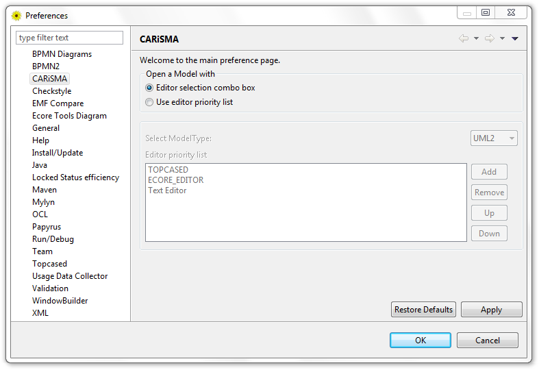
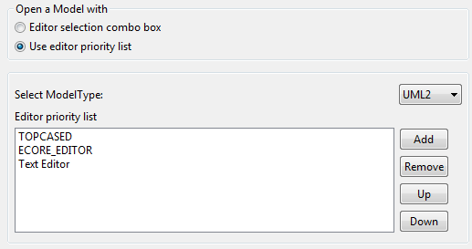

Content:
The CARiSMA settings can be customized by the user. Open Window → Preferences and choose CARiSMA on the left side.
The CARiSMA preference page is shown:

Figure: CARiSMA's main preference page
Depending on the analysis settings, the defined model may change during the execution. So the user may like to edit or review the used model.
The Open a Model with settings in CARiSMA's main preference page specify the editors to be used when opening a model using the Open Model button.

Figure: Analysis Editor Open Model Button
If you want to select a different editor for each analysis file, select the Editor selection combo box option. By clicking on the Open Model button in Analysis Editor,
the editor chosen in Associated Editor combo box (e.g. Eclipse's TextEditor, TOPCASED, Papyrus, etc.) will appear. The selected editor will be applied just for the current opening.
If the analysis is saved, the Associated Editor selection will be saved too.
 To define an ordered list of editors for automatically opening of a model, select this option.
Use the Select ModelType combo box to define editor priority lists for the different model types (e.g. UML2, BPMN2).
Use Add or Remove buttons to add currently available editors into the ordered list or remove an editor from it.
There must be at least one entry.
To define an ordered list of editors for automatically opening of a model, select this option.
Use the Select ModelType combo box to define editor priority lists for the different model types (e.g. UML2, BPMN2).
Use Add or Remove buttons to add currently available editors into the ordered list or remove an editor from it.
There must be at least one entry.

The first entry in the list has the highest priority. If opening the model with this entry fails, the next entry will be taken automatically.
There are currently following editors supported:
- Default Eclipse Editor is not a specific editor. With this option, the editor which is selected by eclipse by default is chosen.
- Text Editor opens the model file as text.
- UML Model Editor opens an uml model with its default editor.
- TOPCASED search for the graphical file of the model (umldi file extension) in the same folder as the model itself,
and if it exists it will be opened with the TOPCASED editor.
- Papyrus search for the graphical file of the model (di file extension) in the same folder as the model itself,
and if it exists it will be opened with the Papyrus editor.
- ECORE Editor opens the model file in a basic EMF ecore editor.